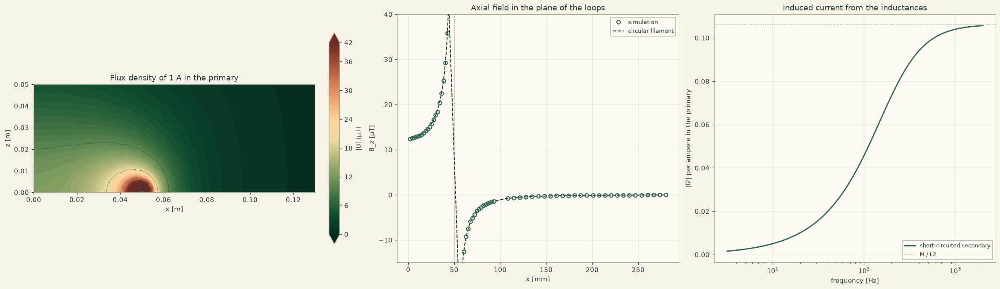
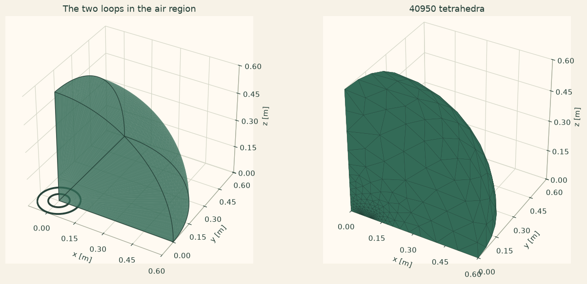

Docs › Examples › Self and mutual inductance of two coplanar loops
Magnetostatics · 3D
Self and mutual inductance of two coplanar loops
Two concentric single-turn copper loops of 50 mm and 100 mm radius lie in one plane; their self-inductances, their mutual inductance and the current induced in the short-circuited secondary are computed.

What it computes
OneSimulation reads one eighth of the air ball and the two loops from STEP files, clips the loops at the symmetry planes and solves three magnetostatic fields with second-order Nédélec elements and the auxiliary-space preconditioner; flux linkage and field energy with copies=8 give the inductances of the whole loops. The script that builds the STEP files comes with the notebook.
What it checks
L1 = 214.15 nH, L2 = 514.40 nH and M = 54.64 nH lie within 0.06, 0.24 and 0.45 % of the geometric-mean-distance formula and of Maxwell's formula integrated over both square cross-sections; flux linkage and field energy give the same M. The field in the plane of the loops follows the circular filament (12.57 µT at the centre). The short-circuited secondary carries 0.025 A per ampere at 50 Hz, its corner frequency is 209.5 Hz.
Geometry
The notebook starts at the import of the CAD files coplanar_loops_mutual_inductance.step, coplanar_loops_mutual_inductance_primary.step, coplanar_loops_mutual_inductance_secondary.step: STEP (AP242), readable by any CAD program, with the names of the faces that the boundary conditions use. Put them next to the notebook.

The geometry script
The script coplanar_loops_mutual_inductance_geometry.py builds the geometry with the CAD objects of OneSimulation and writes the files. Change a dimension there, run it, and run the notebook again.
"""Geometry of the OneSimulation example "Self and mutual inductance of two coplanar loops".
Builds with the CAD objects of OneSimulation one eighth of a ball of air of 0.6 m radius (x, y, z > 0)
around two concentric, coplanar single-turn loops in the plane z = 0, and writes it to
coplanar_loops_mutual_inductance.step with the groups planes (x = 0 and y = 0), midplane (z = 0) and
outer (the sphere). The loops have a square cross-section of 4 mm x 4 mm and mean radii of 50 mm
(primary) and 100 mm (secondary); they go whole to coplanar_loops_mutual_inductance_primary.step and
coplanar_loops_mutual_inductance_secondary.step.
"""
from onesim.cad.d3 import AnnularCylinder, Box, Sphere
radius, side = 0.6, 0.004
cut = Box(length=radius, width=radius, height=radius).named("cut")
air = Sphere(radius=radius).named("ball") & cut
faces = air.boundaries
air = air.grouped(
planes=faces["cut.x_min"] | faces["cut.y_min"],
midplane=faces["cut.z_min"],
outer=air.select(faces=lambda face: face.id.startswith("ball")),
)
air.save("coplanar_loops_mutual_inductance.step")
for name, mean in (("primary", 0.05), ("secondary", 0.1)):
AnnularCylinder(
inner_radius=mean - side / 2,
outer_radius=mean + side / 2,
length=side,
origin=(0.0, 0.0, -side / 2),
).save(f"coplanar_loops_mutual_inductance_{name}.step")The notebook
The complete notebook, cell by cell. Run it to produce the figures and the comparison printout.
A primary loop of mean radius \(R_1=50\) mm and a secondary loop of \(R_2=100\) mm, both of copper with a square cross-section of \(c=4\) mm, lie concentrically in the plane \(z=0\) in air. The magnetostatic field of a current \(I\) in a loop gives its self-inductance \(L=2W/I^2\); with currents in both loops the flux linked with the secondary gives the mutual inductance \(M\).
The arrangement is symmetric about the planes \(x=0\), \(y=0\) and \(z=0\), so one eighth of a ball of air of 0.6 m radius is modelled. The loop currents flow around the \(z\) axis: on the planes \(x=0\) and \(y=0\) the field lies in the plane (\(\mathbf n\times\mathbf A=0\)), on \(z=0\) it is normal to it (magnetic symmetry); on the outer sphere \(\mathbf n\times\mathbf A=0\) as well. The inductances of the whole loops follow with copies=8.
With these inductances a short-circuited secondary carries, for an alternating primary current \(I_1\) of angular frequency \(\omega\), \(I_2=-j\omega M I_1/(R_2+j\omega L_2)\) with \(R_2=2\pi R_2/(\sigma c^2)\), as long as the skin depth exceeds the wire size.
The air region and the loops come from the CAD files coplanar_loops_mutual_inductance*.step; the script coplanar_loops_mutual_inductance_geometry.py builds them with the CAD objects of OneSimulation.
Reference. Maxwell's formula for two coaxial circular filaments (Grover, Inductance Calculations, 1946), \(M=\mu_0\sqrt{ab}\,[(2/k-k)K(k)-2E(k)/k]\) with \(k^2=4ab/((a+b)^2+d^2)\), integrated over both square cross-sections with Gauss points. For the self-inductance of a ring of square cross-section the geometric mean distance \(g=0.44705\,c\) gives \(L=\mu_0R\,[\ln(8R/g)-2]\) (Rosa and Grover, valid for \(c\ll R\)). In the plane of a circular filament of radius \(a\) the field is \(B_z(\rho)=\frac{\mu_0 I}{2\pi}\,\frac{1}{a+\rho}\big[K(k)+\frac{a^2-\rho^2}{(a-\rho)^2}E(k)\big]\), \(k^2=4a\rho/(a+\rho)^2\) (Smythe, Static and Dynamic Electricity, 1950).
import numpy as np
from onesim.cad.d2 import Plane
from onesim.cad.exchange import load
from onesim.materials import VacuumPermeability
from onesim.meshing import LocalRefinement, TetrahedralMesher
from onesim.numerics import Numerics
from onesim.numerics.fem import FiniteElement, Nedelec
from onesim.numerics.linear import GMRES, AuxiliarySpaceMaxwell
from onesim.physics.magnetostatics import (
CoulombGauge,
MagneticInsulation,
MagneticSymmetry,
MagneticVectorPotential,
Magnetostatics,
RegionCurrent,
flux_linkage,
inductance,
magnetic_energy,
)
from onesim.simulation import Problem, Simulation
from onesim.visualization import plots, theme
from scipy.special import ellipe, ellipk
theme.set()Geometry and mesh
load returns the eighth of the air ball with its named faces and the two loops, which the mesher embeds and clips at the symmetry planes. Tetrahedra of 2 mm in and around the loops grow to 10 cm at the outer sphere, six secondary radii away.
name = "coplanar_loops_mutual_inductance"
air = load(f"{name}.step")
faces = air.boundaries
loops = [load(f"{name}_{part}.step").named(part) for part in ("primary", "secondary")]
radii, side, h = (0.05, 0.1), 0.004, 0.002
distance = lambda p: np.min(
[np.hypot(np.hypot(p[:, 0], p[:, 1]) - r, p[:, 2]) for r in radii], axis=0
)
mesh = TetrahedralMesher(
target_size=0.1,
embedded_regions=tuple(loops),
clip_regions=True,
refinements=tuple(LocalRefinement(region=loop, target_size=h) for loop in loops),
size_field=lambda p: np.clip(h + 0.3 * np.maximum(distance(p) - side, 0), h, 0.1),
).generate(air)
view = plots.Camera(elevation=35, azimuth=-60)
fig = plots.figure(1, 2, size=(14, 6))
plots.geometry(
[air.named("air, one eighth")] + loops,
labels=False,
camera=view,
title="The two loops in the air region",
ax=fig[0],
)
plots.mesh(
mesh,
groups=("all",),
legend=False,
camera=view,
title=f"{mesh.cell_count} tetrahedra",
ax=fig[1],
)
plots.show()Magnetostatic fields
RegionCurrent.coil drives 1 A around each loop. Second-order Nédélec elements with the auxiliary-space preconditioner; three fields: primary alone, secondary alone and both.
mu0 = float(VacuumPermeability().evaluate())
source = lambda index: RegionCurrent.coil(
loops[index], turns=1, current=1.0, cross_section=side**2
)
numerics = Numerics(
spatial=FiniteElement(element=Nedelec(order=2)),
linear_solver=GMRES(
preconditioner=AuxiliarySpaceMaxwell(),
relative_tolerance=1e-9,
maximum_iterations=50,
),
)
conditions = lambda model: (
MagneticInsulation(boundary=faces.planes | faces.outer, physics=model),
MagneticSymmetry(boundary=faces.midplane, physics=model),
)
static = {}
for case, indices in (("primary", (0,)), ("secondary", (1,)), ("both", (0, 1))):
sources = tuple(source(i) for i in indices)
model = Magnetostatics(
domain=air.volume,
permeability=VacuumPermeability(),
formulation=MagneticVectorPotential(gauge=CoulombGauge()),
current_sources=sources,
)
result = Simulation(
problem=Problem(
name=f"Loops, {case}",
geometry=air,
physics=(model,),
boundary_conditions=conditions(model),
),
mesh=mesh,
numerics=numerics,
).solve_stationary()
static[case] = (result, model, sources)Inductances
The self-inductances from the flux linkage of each loop alone; the mutual inductance from the flux linked with the secondary when both carry 1 A, and from the field energy as a second way.
L1 = inductance(
static["primary"][0], static["primary"][1], static["primary"][2][0], copies=8
)
L2 = inductance(
static["secondary"][0], static["secondary"][1], static["secondary"][2][0], copies=8
)
M = (
flux_linkage(static["both"][0], static["both"][1], static["both"][2][1], copies=8)
- L2
)
M_energy = (
magnetic_energy(static["both"][0], static["both"][1], copies=8) - (L1 + L2) / 2
)
nodes, weights = np.polynomial.legendre.leggauss(6)
r, z = np.meshgrid(side / 2 * nodes, side / 2 * nodes, indexing="ij")
w = (np.outer(weights, weights) / 4).ravel()
filament = lambda a, b, d: (
lambda k: mu0
* np.sqrt(a * b)
* ((2 / k - k) * ellipk(k * k) - 2 / k * ellipe(k * k))
)(np.sqrt(4 * a * b / ((a + b) ** 2 + d**2)))
exact_M = np.sum(
w[:, None]
* w[None, :]
* filament(
radii[0] + r.ravel()[:, None],
radii[1] + r.ravel()[None, :],
z.ravel()[:, None] - z.ravel()[None, :],
)
)
ring = lambda R: mu0 * R * (np.log(8 * R / (0.44705 * side)) - 2)
print(f"{mesh.cell_count} tetrahedra")
print("quantity simulation [nH] reference [nH] deviation")
for label, value, reference in (
("L1, primary", L1, ring(radii[0])),
("L2, secondary", L2, ring(radii[1])),
("M from the flux linkage", M, exact_M),
("M from the field energy", M_energy, exact_M),
):
print(
f"{label:28s} {1e9 * value:16.3f} {1e9 * reference:16.3f} {100 * (value / reference - 1):+10.3f} %"
)
print(f"coupling coefficient k = M / sqrt(L1 L2) = {M / np.sqrt(L1 * L2):.4f}")Induced current and figure
The current induced in a short-circuited copper secondary (\(\sigma=5.8\cdot10^7\) S/m) per ampere in the primary, from the computed inductances; the flux density of the primary alone on the plane \(y=0\); and its axial component along the \(x\) axis in the plane of the loops against the circular filament.
sigma = 5.8e7
resistance = 2 * np.pi * radii[1] / (sigma * side**2)
f = np.logspace(0.5, 3.3, 80)
induced = 2 * np.pi * f * M / np.abs(resistance + 2j * np.pi * f * L2)
print(
f"secondary resistance {1e3 * resistance:.4f} mOhm; corner frequency R2 / (2 pi L2) = {resistance / (2 * np.pi * L2):.1f} Hz; "
f"induced current at 50 Hz {induced[np.argmin(np.abs(f - 50))]:.4f} A, at high frequency M / L2 = {M / L2:.4f} A per ampere"
)
rho = np.concatenate(
(
np.linspace(0.002, 0.044, 60),
np.linspace(0.056, 0.094, 50),
np.linspace(0.106, 0.28, 80),
)
)
field = static["primary"][0].field(static["primary"][1].magnetic_flux_density)
loop = lambda a, r: (
lambda k2: mu0
/ (2 * np.pi)
/ (a + r)
* (ellipk(k2) + (a**2 - r**2) / (a - r) ** 2 * ellipe(k2))
)(4 * a * r / (a + r) ** 2)
axis = np.column_stack((rho, np.full_like(rho, 1e-6), np.full_like(rho, 1e-6)))
fig = plots.figure(1, 3, size=(21, 6))
plots.section(
field,
plane=Plane(origin=(0, 1e-6, 0), normal=(0, 1, 0)),
component=lambda B, position: 1e6 * np.linalg.norm(B, axis=1),
limits=(0, 40),
contours=11,
subdivisions=2,
xlimits=(0, 0.13),
ylimits=(0, 0.05),
xlabel="x [m]",
ylabel="z [m]",
label="|B| [µT]",
title="Flux density of 1 A in the primary",
ax=fig[0],
)
plots.line(
points={"simulation": (1e3 * rho[::3], 1e6 * field.evaluate(axis[::3])[:, 2])},
reference={"circular filament": (1e3 * rho, 1e6 * loop(radii[0], rho))},
vlines=[50.0],
ylimits=(-15, 40),
xlabel="x [mm]",
ylabel="B_z [µT]",
title="Axial field in the plane of the loops",
ax=fig[1],
)
plots.line(
x=f,
y={"short-circuited secondary": induced},
hlines={"M / L2": M / L2},
scale="logx",
xlabel="frequency [Hz]",
ylabel="|I2| per ampere in the primary",
title="Induced current from the inductances",
ax=fig[2],
)
plots.show()Going further
Move the secondary out of the plane in coplanar_loops_mutual_inductance_geometry.py (a coaxial pair) and compare \(M\) with Maxwell's formula at that distance, or wind the secondary with more turns (RegionCurrent.coil(..., turns=20)) and watch \(M\) grow in proportion.